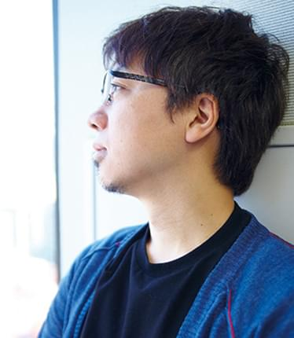

Story
九州の静かな町で暮らす7歳の少女・鈴芽（すずめ）は、
「扉を探してるんだ」という旅の青年・草太に出会う。
彼の後を追って迷い込んだ山中の廃墟で見つけたのは、ぽつんとたたずむ古ぼけた扉。
なにかに引き寄せられるように、すずめは扉に手を伸ばすが…。
扉の向こう側からは災いが訪れてしまうため、
草太は扉を閉めて鍵をかける“閉じ師”として旅を続けているという。
すると、二人の前に突如、謎の猫・ダイジンが現れる。
「すずめ すき」「おまえは じゃま」
ダイジンがしゃべり出した次の瞬間、草太はなんと、椅子に姿を変えられてしまう―！
それはすずめが幼い頃に使っていた、脚が1本欠けた小さな椅子。
逃げるダイジンを捕まえようと3本脚の椅子の姿で走り出した草太を、すずめは慌てて追いかける。
やがて、日本各地で次々に開き始める扉。
不思議な扉と小さな猫に導かれ、九州、四国、関西、そして東京と、
日本列島を巻き込んでいくすずめの”戸締まりの旅”。
旅先での出会いに助けられながら辿りついたその場所ですずめを待っていたのは、
忘れられてしまったある真実だった。
予告映像
制作背景
 監督の新海誠は「（2011年から）10年間は、ずっと3.11のことを考えながら映画を作っていた」
と振り返り、本作でも東日本大震災をテーマに選んだ。
そして前2作の『君の名は。』『天気の子』では震災を彗星や天候がもたらす災害というように形を変えて描いていたが、本作では震災で親を失い、故郷を離れた女子高校生を主人公とすることで直接描いている。
新海は完成報告記者会見で、「観客の多くは10歳代で、共通体験としての震災が薄くなっている。
でも今なら同じ気持ちを共有できるかもしれない」とその思いを語った。
新海は舞台挨拶などで全国を回った経験から、地方では過疎化が進み、かつての賑わいが失われた場所が増えたことを実感し、
「新しい建造物を建てるときには
地鎮祭のような儀式があるが、
町でも土地でも"終わる"ときには葬式のような儀式は存在しない。
それならば人々の思いや記憶が眠る廃墟を悼み、鎮める物語を作ろう」と考えて本作を制作した。
そして「場所を悼む」という物語の原型を膨らませた結果、ストーリーの構造上、必然的に
ロードムービーといった形式になった。
新海は本作に影響を与えた作品として、村上春樹の
『かえるくん、東京を救う』
や、
宮崎駿監督の
『魔女の宅急便』を挙げている。
概要
| 原作・脚本・監督 | 新海誠 |
|---|---|
| 制作会社 | コミックス・ウェーブ・フィルム STORY inc. |
| 配給 | 東宝 |
| 興行収入 | 147.9億円 |
| 動員 | 133万1081人 |
| 上映時間 | 122分 |
2022©︎すずめの戸締り制作委員会
TH / CG12D203 / 07 / 金子桃花